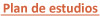

| |
nuestro objetivo
La Universidad El Bosque, fundamentada en su gran experiencia en el sector de salud y en los principios del Modelo Biopsicosocial, ofrece un excelente programa para formar odontólogos integrales, con alta calidad científica, humana, ética y moral, comprometidos con el país y capaces de dar solución a la problemática en salud tanto nacional como internacionalmente.
perfil de formación
Formamos Odontólogos:
De alta calidad, capaces de desempeñarse en el sector gubernamental, empresarial, clínico e investigativo.
Que marcan la diferencia en calidad-tecnología, trabajo clínico, hospitalario y comunitario.
Profesionales líderes con alto conocimiento de la realidad nacional e internacional, que a través de los avances técnico, científico, humanístico y bioética puedan transformar el conocimiento y mejorar la calidad de vida.
¿qué nos hace diferentes?
Programa Académico
La acreditación por alta calidad académica (Consejo Nacional de Acreditación - Ministerio de Educación) e Internacional OFEDO - UDUAL La Organización de Facultades, Escuelas, Departamentos e Institutos de Odontología de la Unión de Universidades de América Latina y El Caribe.
Un currículo flexible e innovador, que permite al estudiante desarrollar de modo integral sus capacidades personales y profesionales, facilitando su inserción en el medio laboral de un modo más competitivo.
Aprendizaje significativo de la profesión odontológica bajo el Modelo Biopsicosocial. |
|
Recursos Educativos
Rotaciones clínicas y hospitalarias multicéntricas.
Los mejores laboratorios de simulación, ciencias básicas, técnicas odontológicas y laboratorios de investigación, dotados con excelentes equipos.
El más grande y completo museo de anatomía del país.
Una biblioteca especializada en salud, con tecnología de punta, acceso a bases de datos internacionales y una amplia colección de revistas científicas y textos actualizados.
Un centro de Lenguas que favorece el desarrollo de competencias básicas o avanzadas en una 2° lengua (Inglés - Francés).
Nuestras Mayores Fortalezas
Alto nivel académico.
Convenios con Universidad de Copenhague, Ohio State University, Instituto Forsyth, Hospital San José, Colegio Odontológico de Lima, Universidad Tlaxcala, Universidad Charite, University of Berlín, Universidad de la Florida, Universidad de Quetzalcóatl, Hospital Universitario Fundación Santa Fe de Bogotá, Universidad Autónoma de Nuevo León México, Universidad de Temple, Temple University.
Docentes con excelente formación académica y pedagógica.
Seminario permanente transcurricular de Bioética.
Grupos de investigación científica en Odontología UIBO, UNICA, UMIMC reconocidos por Colciencias, con líneas de investigación en materiales dentales, bioriesgo, tecnología clínica, entre otras.
Posibilidad de intercambios nacionales e internacionales.
Egresados con excelente imagen en el mercado laboral y ocupacional.
 |
|